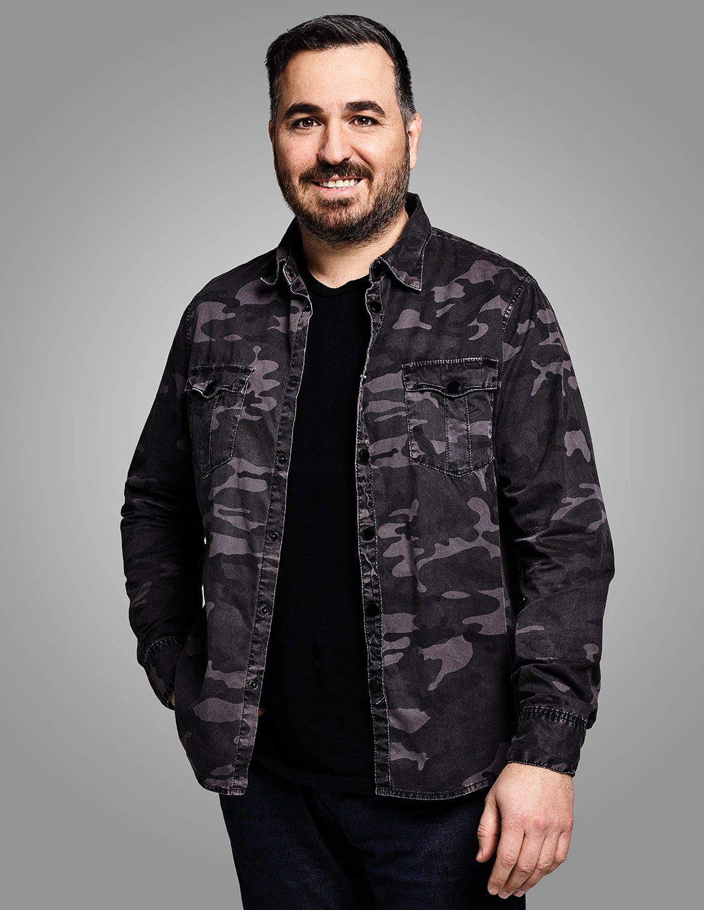
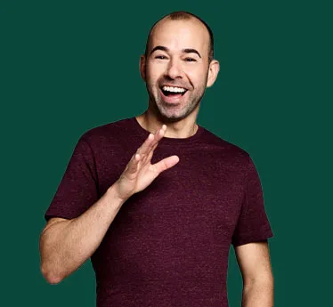
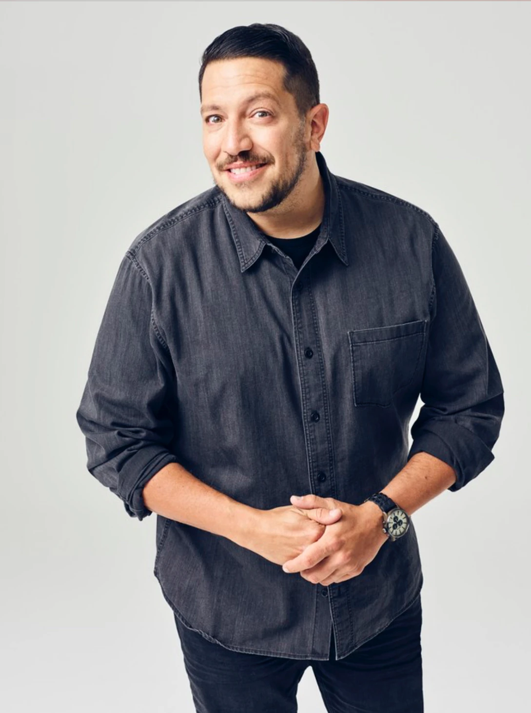
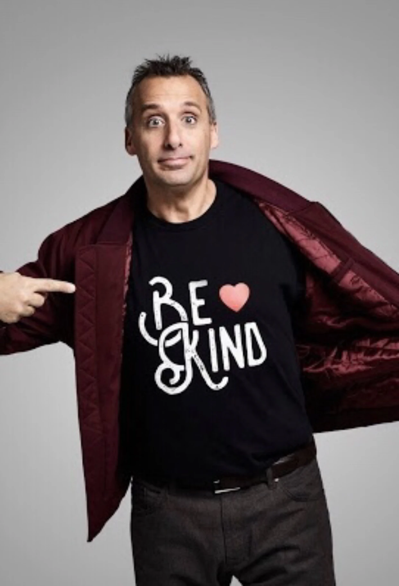

Want to find out more about each member of this quarter? Here is the space!
Hover over their images for a glimpse of a punishment they have faced.

Q (born 14th March 1976) is a new Yorker who worked as a fireman before collaborating with some of his high-school friends to form the impractical jokers.
Brian "Q" Quinn
Q (born 14th March 1976) is a new Yorker who worked as a fireman before collaborating with some of his high-school friends to form the impractical jokers.
No matter where challenges are filmed, Q always knows how to trip up the other jokers duirng their turns
as well as create some twists during his own turns. From the creation of detective Tony Gunk to having an extended argument with a man we only know as
"Mustache".
A memorable punishment he has faced involved dressing up as Peter Pan for a musical which then turned out to be a wrestling
match against WWE Champion, Tommy Dreamer.
Follow Q on Twitter:
Follow Q On Twitter

Murr (born 1st May 1976) was born in new Jersey but was raised in New York. before impratical jokers, he was a director and writer for the movie
"Damned".
Another memorable punishment Murr has faced involved him being hung up as a human pinata...then after some time Joe's brother in law stopped by
to get to hit the pinata too! But after these crazy punishemnts his ability to take a joke always shines through.
James "Murr" Murray
Murr (born 1st May 1976) was born in new Jersey but was raised in New York. before impratical jokers, he was a director and writer for the movie
"Damned".
Despite Murr's several wins across the seasons he has come off as "nervous" by his slight neck twitches
after being told what to do and say. He also goes under the nickname "Ferret" from his loud high-pitched screams of fear when he went skydiving for
the first time despite
HIS FEAR OF HEIGHTS!
Another memorable punishment Murr has faced involved him being hung up as a human pinata...then after some time Joe's brother in law stopped by
to get to hit the pinata too! But after these crazy punishemnts his ability to take a joke always shines through.
Follow Murr on Twitter:
Follow Murr On Twitter

Sal (born 6th November 1976) was born and raised in Staten island, New York. Before the ipractical jokers, he got a degree in Finance.
Sal Vulcano
Sal (born 6th November 1976) was born and raised in Staten island, New York. Before the ipractical jokers, he got a degree in Finance.
When it comes to challenges involving focus groups or presentations, his composure drops the fastest with some jokes
being just too hilarious for him to say out loud to a group of random strangers. He has been progressing through every challenge
and punishment despite his fear of cats, tight spaces and germs which have helped to make some of Sal's reactions
the most hilarious across every season.
As a joker, Sal wins the award for most punished joker. One of his most gruelling punishments to date is
getting a Jaden Smith tatoo on his thigh, but of ccourse, this is one of many. The list goes on and on.
When it comes to Sal punishments, they may be a bit frequent but undoubtedly funny.
Follow Sal on Twitter:
Follow Sal On Twitter

Joe (born 5th June 1976) was also bon in Staten Island, New York. As of now, Joe was a part of the Impractical Jokers from the beginning,
in 2011. In 2022 Joe left the quartet after going through a divorce from his wife and to focus on looking after his children and pets.